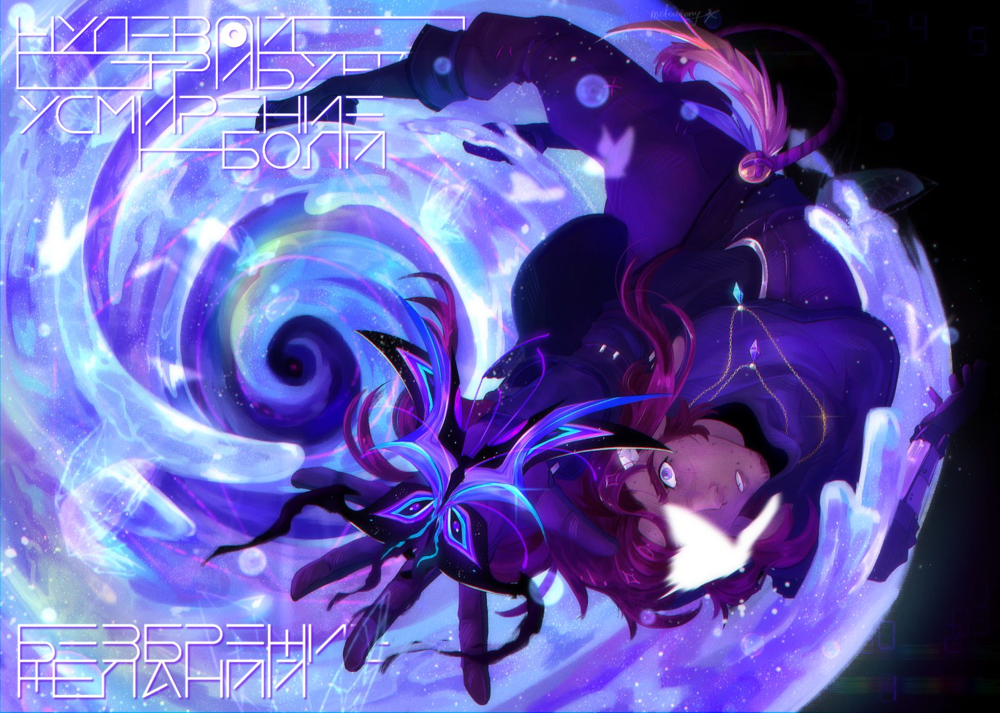

Когда Молчание разбивается Словом, рождается новое Повествование.
С самого детства Кеннет мечтает о свободе, не веря в неотвратимость судьбы, но Вселенная не прощает тех, кто пытается переписать её творение. В погоне за ускользающей правдой он погружается в водовороты древних тайн и политических интриг, ещё не зная, что за право выбирать собственный путь ему придётся заплатить больше, чем он способен потерять. Ведь свобода — не величайший дар, а бремя самого страшного греха. Греха, который не прощают ни Боги, ни те, кого ты осмелишься назвать семьёй.
Главы части 2 сейчас пишутся — загляните позже.